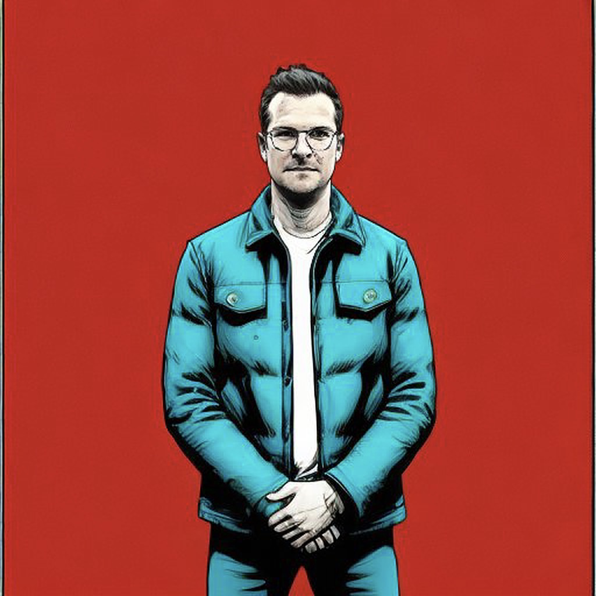

Craig Portman

CPG Professional | Retail Sales Catalyst
As an Intrapreneur with global CPG/FMCG experience and a proud track record of growth in Sales & Distribution Management, Brand Leadership, Trade Marketing and Route-to- Market Development, I truly believe I can be an asset to any organization. My leadership approach is rooted in Gallup Strengths-Finder principles, emphasizing the importance of our people as our most valuable asset. I am committed to understanding and internalizing my company's vision, as I believe it is the foundation for unlocking and enabling significant growth. My purpose is to deliver on SMART goals. I believe in making progress visible and celebrating every small win along the way. As a strategic thinker and catalyst for positive change, my aim is to identify and address customer and consumer pain points, contributing to the overall improvement of all stakeholders.
Currently, I am actively seeking an opportunity to partner with an organization that shares my commitment to aspirational growth. Together, we can achieve our Brand and Bottom-Line vision through World-Class execution.
Competency
CPG | FMCG | Brands Leadership | Sales Strategy |Beer and Spirit Sales | Global Brand Marketing | Event Planning | Brand Partnerships | Communication | B2B | B2C | Brand Events | Brand Leadership | Retail | On Premise | Agency Briefing | Agency Management | Brand Analytics | Results Measurement | Key Note Speaker | Budget Management | A&P Budgets | Supplier Partnerships | Strategic Planning | Digital Marketing | Content Curation | AI Augmentation | Planogram Design and Execution | BI Implementation | POS | Retail Experiences | Consumer Behaviour | Trend Analysis | Trade Development | Program Innovation | Engagement
Experience
General Manager
Contracting Group | Elmira, ON
DEC 2021 - Present
In collaboration with the President, I oversee the operational, systems and process support, and growth strategy of Conestoga Contracting Group, an outdoor Landscaping and Construction Startup with 50+ employees and consistent double-digit YOY growth.
Highlights
- 15% overhead saving in the first 6 months
- 10% reduction in Indirect labour through KPI creation
- 100% implementation of new Operational Software - Aspire
- 100% implementation of new Foreign Worker Program
- 100% implementation of new Budgeting System and Process
- Initiated Zero-Based Budgeting
- Completed Company Rebranding
- Updated & transformed the e-commerce Strategy
- Implemented a Professional Social Media Calendar and Process
- Up-skilled Managers to deliver on job costing, margin planning and Pricing
Key Responsibilities
- EBIDTA management and reporting
- All marketing and E-comm strategies and initiatives
- Manage the administrative and financial team.
- Budget and Contractor management
- Budget and Contractor management
- KPI Management and Reporting
- Business Automation
- Management of Sales Funnel
- Corporate, Legal Compliance
- Systems and Process Development
Previous Experience
See Full Resume Here
- Sept 2021 - Dec 2021
- Relocation to Ontario, Canada
- Oct 2018 - Sept 2021
- DISTRICT MANAGER | Ab-Inbev | Cape Town, South Africa
- Feb 2018 - Oct 2018
- REGIONAL TRADE MARKETING MANAGER | Ab-Inbev | Cape Town, South Africa
- Feb 2016 - Feb 2018
- HIGH-END MARKETING MANAGER | Ab-Inbev | Cape Town, South Africa
- Apr 2015 - Feb 2016
- Apr 2012 - Apr 2015
- Aug 2010 - Apr 2012
- Jul 2008 - Aug 2010
Connect with Me